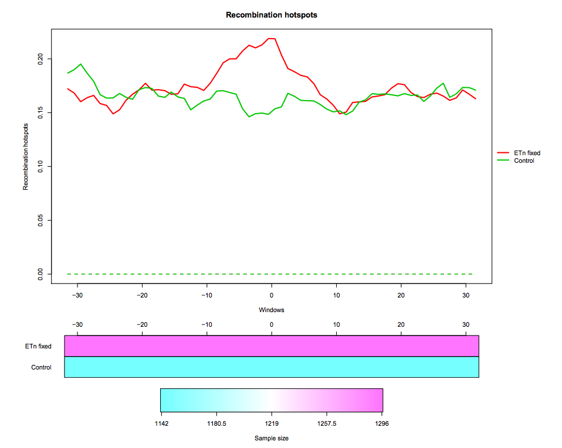

Interval-Wise Testing for omics data
 Marzia A Cremona
Marzia A Cremona
 Fabio Cumbo
Fabio Cumbo
OverviewQuestions:
Objectives:
How to visualize high-resolution omics data in different groups of genomic regions?
How to evaluate differences in high-resolution omics data between groups of genomic regions?
How to detect locations and scales at which the significant effects unfold?
Requirements:
Pre-process high-resolution omics data
Create pointwise boxplots corresponding to different groups of genomic regions
Perform the Interval-Wise Testing between two groups of genomic regions
Visualize and inspect test results
Detect relevant locations and scales
Time estimation: 1 hourSupporting Materials:Last modification: Oct 18, 2022License: Tutorial Content is licensed under Creative Commons Attribution 4.0 International License The GTN Framework is licensed under MITShort Link: https://gxy.io/GTN:T00269
Introduction
IWTomics (Cremona et al. 2018) implements the Interval-Wise Testing (IWT; Pini and Vantini 2017) for omics data. This inferential procedure tests for differences in “Omics” data between two groups of genomic regions, and does not require fixing location and scale at the outset.
In this tutorial we use real data about endogenous retroviruses (ERVs) in mouse. In particular, we compare recombination hotspots in the flanking regions of fixed ETn versus control regions. The dataset contains two region datasets “ETn fixed”, “Control” and one feature “Recombination hotspots content”. The region dataset “ETn fixed” contains 1296 genomic regions of 64 kb surrounding fixed ETns elements (32-kb flanking sequences upstream and 32-kb flanking sequences downstream of each element). The region dataset “Control” contains 1142 regions of 64 kb without elements, used as control in the test. The regions are aligned around their center (i.e. around the ETn integration sites).
Recombination hotspots measurements are associated to each “ETn fixed” and “Control” region. In particular, this feature is measured in 1-kb windows, so that each region is associated to a recombination hotspots curve made of 64 values. The measurement used is the feature content, i.e. the fraction of the 1-kb window that is covered by recombination hotspots
The data we use in this tutorial is available at Zenodo.
AgendaIWTomics is composed of three steps (corresponding to three tools):
Step 1: Loading and pre-processing
The first tool (IWTomics Load Smooth and Plot) imports a collection of genomic region datasets, and associates to each region multiple genomic feature measurements. It allows to align the regions in multiple ways (center, left, right or scale alignment), to smooth the feature curves (possibly filling gaps in the measurements) and to create a graphical representation of the feature measurements in each region datasets (aligned curves or pointwise quantile curves).
Hands-on: Get the data
Create a new history for this tutorial
Click the new-history icon at the top of the history panel.
If the new-history is missing:
- Click on the galaxy-gear icon (History options) on the top of the history panel
- Select the option Create New from the menu
- Import datasets:
- Fixed ETn (
ETn_fixed.bed) regions- Control (
Control.bed) regions- Recombination Hotspot (
Recombination_hotspots.txt) contenthttps://zenodo.org/record/5589610/files/ETn_fixed.bed https://zenodo.org/record/5589610/files/Control.bed https://zenodo.org/record/5589610/files/Recombination_hotspots.txt- Import header files for regions and features:
regions_header.tabularfeatures_header.tabularhttps://zenodo.org/record/5589610/files/regions_header.tabular https://zenodo.org/record/5589610/files/features_header.tabularPlease note that the file names in the first column of the header files must exactly match the dataset names in the Galaxy history.
Hands-on: Pre-process data and create pointwise boxplotLoad, Smooth and Plot tool: Run Load, Smooth and Plot with:
- Select the two region datasets
ETn_fixed.bedandControl.bed.- Select the region header file
regions_header.tabular.- Select the feature file
Recombination_hotspot.txt.- Select the feature header file
features_header.tabular.- Start positions are 0-based in this example; all region alignments are equivalent in this case.
- You can choose to smooth the feature curves.
- Select the graphical representation type Pointwise quantile curves (boxplot).

Step 2: Performing Interval-Wise Testing
The second tool (IWTomics Test and Plot) statistically evaluates differences in genomic features between groups of regions along the genome. In particular, it implements the Interval-Wise Testing for omics data, an extended version of the Interval-Wise Testing for functional data presented in Pini and Vantini (2017).
It allows to perform multiple two sample permutation tests between pairs of region datasets, on several features. It returns the adjusted p-value curves for every test and all possible scales. Moreover, it creates a graphical representation of the Interval-Wise Testing results and a summary plot (optional) with p-values at the maximum scale. The tool IWTomics Plot with Threshold on Test Scale permits to select the scale to be used in the plots.
Hands-on: Test for difference between ETn and Control regionsTest and Plot tool: Run Test and Plot with:
- Select the
IWTomicsData Object,Region Dataset IDs, andFeature IDscreated during Step 1.- Select pairs of genomic region datasets to be compared using two-sample Interval-Wise Testing. In this example we consider one two-sample test contrasting
ETn_fixed(select it as Region 1) toControl(select it as Region 2).- Select feature measurements to be tested. In this example, select
Recomb_hotfeature.- You can choose the test statistic, the number of permutations, and the significance level of the test (alpha).
- Select the graphical representation type Pointwise quantile curves (boxplot).

Step 3: Selecting test scale
The third tool (IWTomics Plot with Threshold on Test Scale) allows to select the scale for the Interval-Wise Testing results. In particular it returns the p-value curves for the different tests performed at the selected scale, and it creates a graphical representation of the Interval-Wise Testing results and a summary plot (optional) at the selected scale.
Hands-on: Change scale for test resultsPlot with Threshold on Test Scale tool: Run Plot with Threshold on Test Scale with:
- Select the
IWTomicsData Object with Test Results,Test IDs, andFeature IDscreated during Step 2.- Select the scale to be used in Interval-Wise Testing results and plot. Select the test identifier
ETn_fixed vs Control, the feature identifierRecomb_hot, and the scale8(8-kb scale).- Select the graphical representation type Pointwise quantile curves (boxplot).

Read more about IWTomics here.
Key points
High-resolution omics data can be represented as curves along the genome
IWTomics permits to visualize these data
The Interval-Wise Testing detects statistically significant differences between pairs of genomic regions
The Interval-Wise Testing corrects p-values taking into consideration the ordered nature of measurements along the genome
Locations and scales do not need to be specified at the outset, indeed IWTomics permits to detect them
Frequently Asked Questions
Have questions about this tutorial? Check out the tutorial FAQ page or the FAQ page for the Statistics and machine learning topic to see if your question is listed there. If not, please ask your question on the GTN Gitter Channel or the Galaxy Help ForumReferences
- Pini, A., and S. Vantini, 2017 Interval-wise testing for functional data. Journal of Nonparametric Statistics 29: 407–424. 10.1080/10485252.2017.1306627
- Cremona, M. A., A. Pini, F. Cumbo, K. D. Makova, F. Chiaromonte et al., 2018 IWTomics: testing high-resolution sequence-based ‘Omics’ data at multiple locations and scales (I. Birol, Ed.). Bioinformatics 34: 2289–2291. 10.1093/bioinformatics/bty090
Feedback
Did you use this material as an instructor? Feel free to give us feedback on how it went.
Did you use this material as a learner or student? Click the form below to leave feedback.

Citing this Tutorial
- Marzia A Cremona, Fabio Cumbo, Interval-Wise Testing for omics data (Galaxy Training Materials). https://training.galaxyproject.org/training-material/topics/statistics/tutorials/iwtomics/tutorial.html Online; accessed TODAY
- Batut et al., 2018 Community-Driven Data Analysis Training for Biology Cell Systems 10.1016/j.cels.2018.05.012
Congratulations on successfully completing this tutorial!@misc{statistics-iwtomics, author = "Marzia A Cremona and Fabio Cumbo", title = "Interval-Wise Testing for omics data (Galaxy Training Materials)", year = "", month = "", day = "" url = "\url{https://training.galaxyproject.org/training-material/topics/statistics/tutorials/iwtomics/tutorial.html}", note = "[Online; accessed TODAY]" } @article{Hiltemann_2023, doi = {10.1371/journal.pcbi.1010752}, url = {https://doi.org/10.1371%2Fjournal.pcbi.1010752}, year = 2023, month = {jan}, publisher = {Public Library of Science ({PLoS})}, volume = {19}, number = {1}, pages = {e1010752}, author = {Saskia Hiltemann and Helena Rasche and Simon Gladman and Hans-Rudolf Hotz and Delphine Larivi{\`{e}}re and Daniel Blankenberg and Pratik D. Jagtap and Thomas Wollmann and Anthony Bretaudeau and Nadia Gou{\'{e}} and Timothy J. Griffin and Coline Royaux and Yvan Le Bras and Subina Mehta and Anna Syme and Frederik Coppens and Bert Droesbeke and Nicola Soranzo and Wendi Bacon and Fotis Psomopoulos and Crist{\'{o}}bal Gallardo-Alba and John Davis and Melanie Christine Föll and Matthias Fahrner and Maria A. Doyle and Beatriz Serrano-Solano and Anne Claire Fouilloux and Peter van Heusden and Wolfgang Maier and Dave Clements and Florian Heyl and Björn Grüning and B{\'{e}}r{\'{e}}nice Batut and}, editor = {Francis Ouellette}, title = {Galaxy Training: A powerful framework for teaching!}, journal = {PLoS Comput Biol} Computational Biology} }